Clareamento dental
O pedido mais frequente do consultório — e um dos resultados mais rápidos de perceber. Clareamento de consultório, caseiro ou combinado, com controle de sensibilidade.
Resultados já na 1ª sessãoOdontologia humanizada em Boa Viagem, Recife. Aqui o tratamento começa com escuta — porque cada paciente chega com uma expectativa diferente.
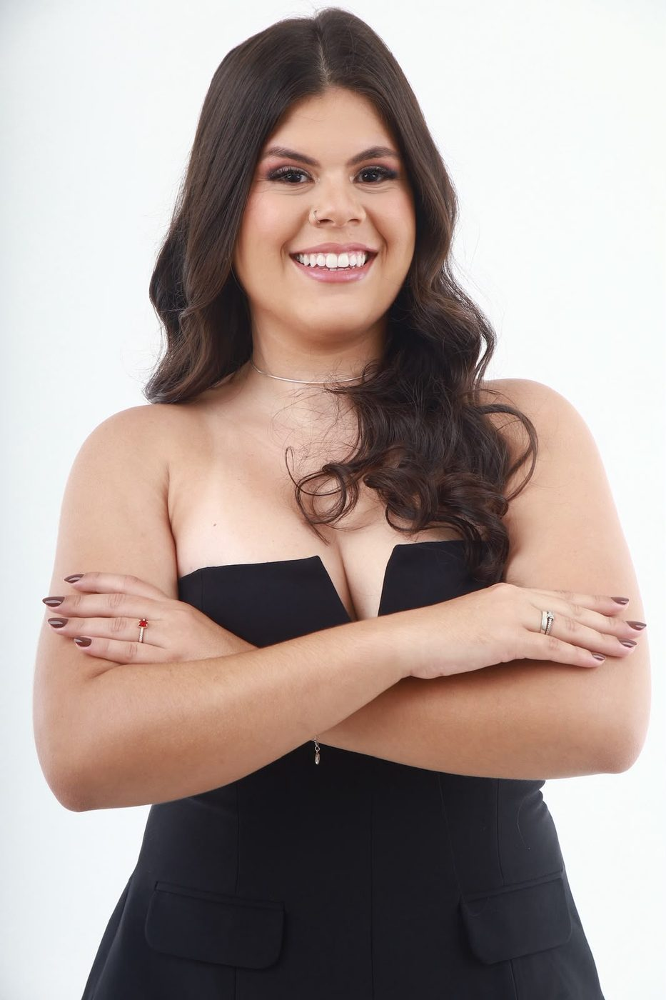
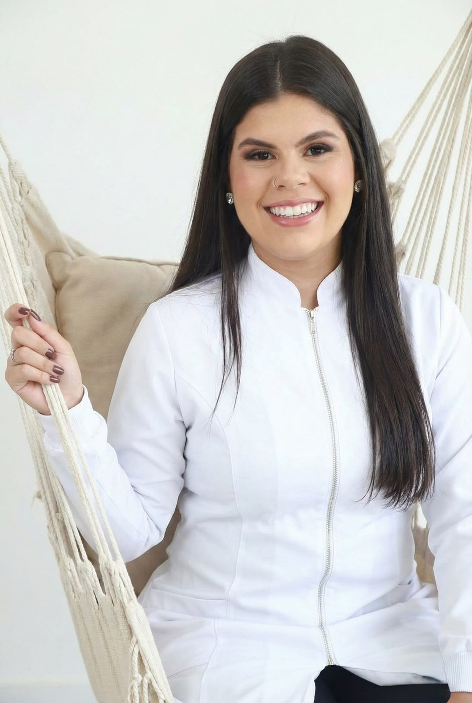
“Quando o paciente senta na minha cadeira, quero que ele encontre, antes de tudo, conforto e segurança.”
Drª Ester BarbosaQuem cuida de você
Sou Ester Barbosa, cirurgiã-dentista, 27 anos, e atendo em Recife e região.
Entrei na UPE pelo curso de Saúde Coletiva e foi ali, no meio de tantas áreas da saúde, que a odontologia fez sentido para mim. Mas a virada veio de dentro de casa: meu primo, Vinícius Holanda, um grande endodontista de Recife, foi minha primeira referência de excelência. Quando contei que ia entrar no curso, ele me chamou para atender junto com ele — queria que eu me apaixonasse antes de começar. Deu certo.
Minha formação foi concluída no fim de 2025, na Universidade Tiradentes. A caminhada acadêmica foi generosa comigo, mesmo atravessada pela perda mais difícil da minha vida: a partida do meu pai. Amadurecer antes da hora me deu uma sensibilidade que hoje eu levo para cada atendimento.
Desde que recebi meu CRO, não esperei nada para começar. Atendo na clínica Ser Odontologia, ao lado do Dr. Flávio Venícius, e em consultórios particulares na cidade — com alinhadores, clareamento, cirurgia, endodontia, periodontia e restaurações. Continuo estudando, continuo evoluindo e, principalmente, continuo cuidando de pessoas.
Propósito
Odontologia é mais do que tratar dentes.
É cuidar de pessoas — e cada uma chega com uma história, uma necessidade e uma expectativa diferente.
Meu propósito é que você não se sinta apenas atendido, mas que perceba o quanto de cuidado existe em cada etapa. Quero construir uma relação de confiança, acompanhar o tratamento do começo ao fim e fazer com que você se sinta seguro para cuidar da própria saúde.
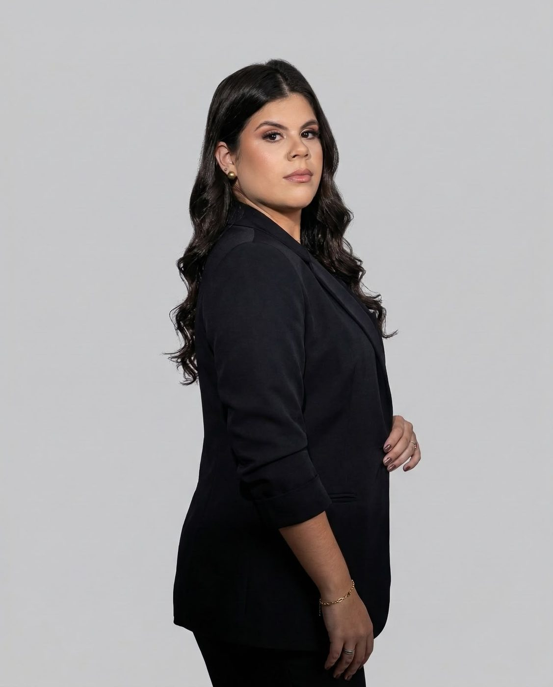
Tratamentos
Da prevenção à estética, com planejamento individual e explicação de cada etapa antes de começar.
O pedido mais frequente do consultório — e um dos resultados mais rápidos de perceber. Clareamento de consultório, caseiro ou combinado, com controle de sensibilidade.
Resultados já na 1ª sessãoOrtodontia estética e removível, planejada digitalmente em parceria com o Dr. Flávio Venícius. Discretos, confortáveis e com previsibilidade de cada movimento.
Planejamento digitalExtrações, sisos inclusos e pequenos procedimentos com capacitação específica pelo grupo MFT. Minha paixão dentro da odontologia — feita com técnica e calma.
Capacitação MFTTratamento de canal com foco em conforto e preservação do dente. A área que aprendi a admirar ainda antes da faculdade, acompanhando meu primo Vinícius.
Dente preservadoLimpeza profissional, raspagem e tratamento de gengiva. A base de toda a odontologia: sem gengiva saudável, nenhum resultado estético se sustenta.
A base de tudoResinas que devolvem forma, função e naturalidade ao dente, com escolha de cor feita junto com você e acabamento imperceptível.
Cor personalizadaAvaliação completa, profilaxia, aplicação de flúor e orientação de higiene. O acompanhamento que evita o tratamento caro lá na frente.
Manutenção semestralDor, fratura ou trauma não esperam horário comercial. Sempre que possível, encaixo o atendimento para resolver a dor primeiro e planejar depois.
Encaixe pelo WhatsAppQuando o caso pede mais de uma especialidade, montamos um plano em etapas: primeiro saúde, depois função, por último estética — no seu tempo e no seu orçamento.
Etapas e prioridadesComo funciona
Você conta o que está sentindo e o que gostaria de mudar. Já nesse primeiro contato eu entendo a urgência do seu caso e encontro o melhor horário.
Exame clínico completo, fotos quando necessário e — principalmente — tempo para ouvir. Nenhum procedimento começa antes de você entender o porquê dele.
Você recebe o plano por escrito, em etapas, com prioridades e valores fechados. Sem surpresa no meio do caminho e sem procedimento que você não escolheu.
Executamos cada etapa no seu ritmo, com anestesia confortável e pausas quando precisar. Depois, acompanhamento de perto para o resultado durar.
Antes e depois
Casos clínicos realizados e documentados no consultório. Cada resultado depende das condições iniciais de cada paciente.
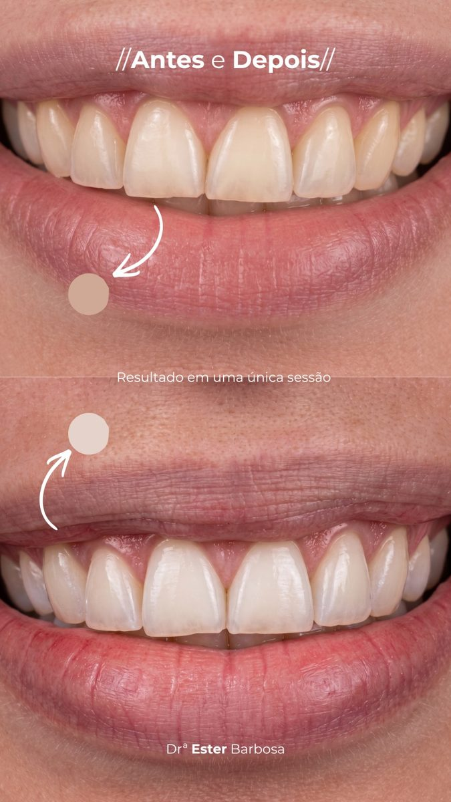
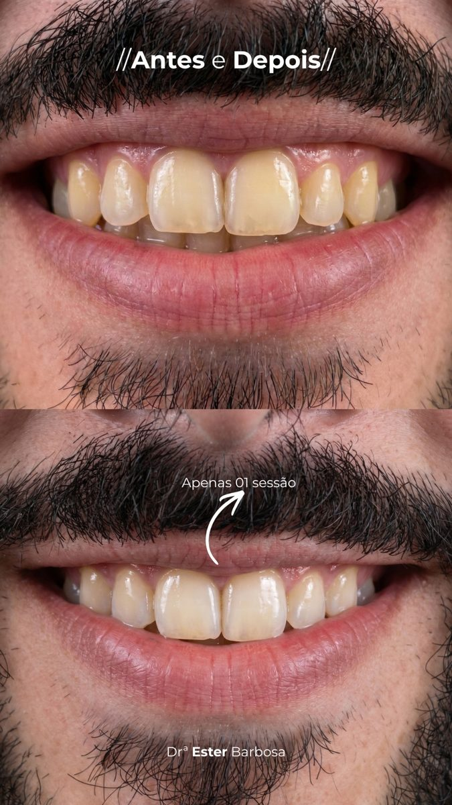
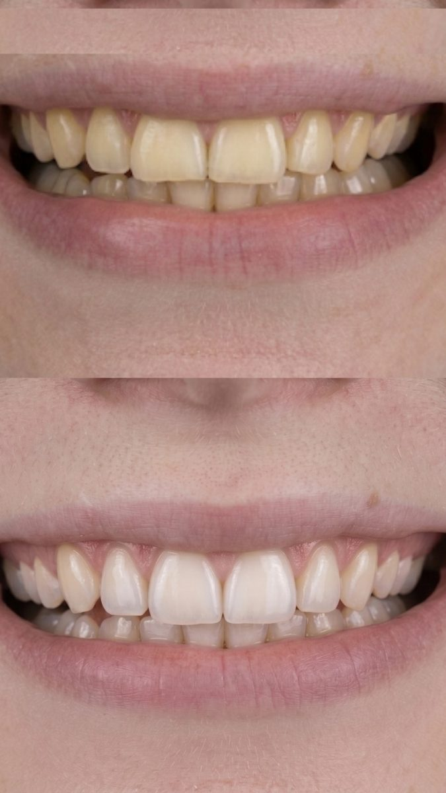
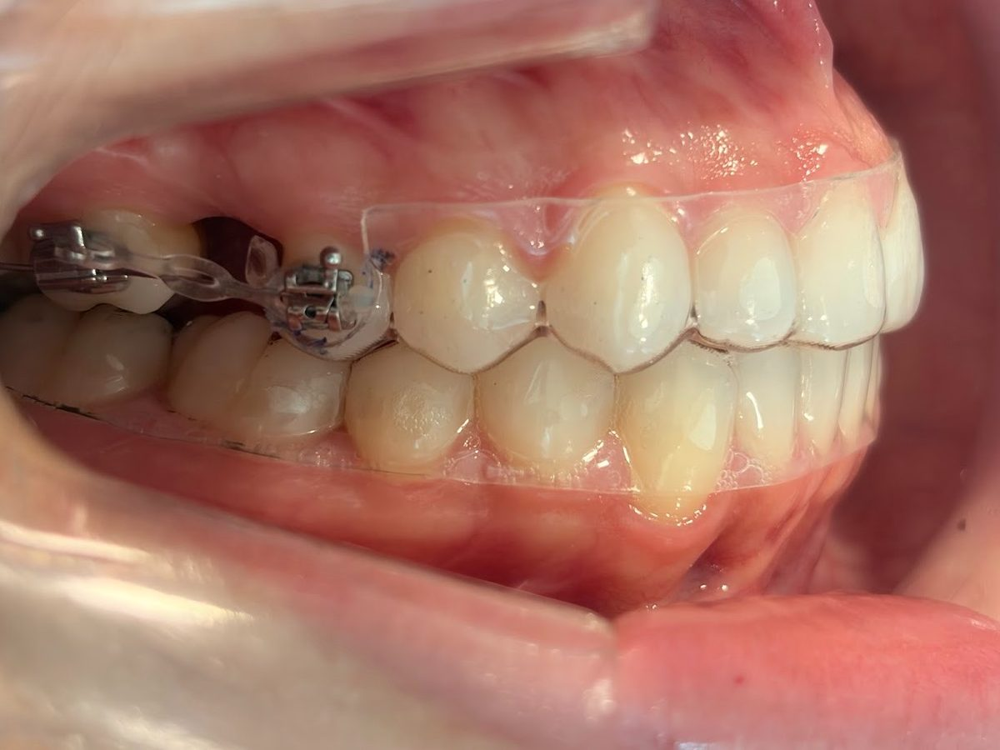
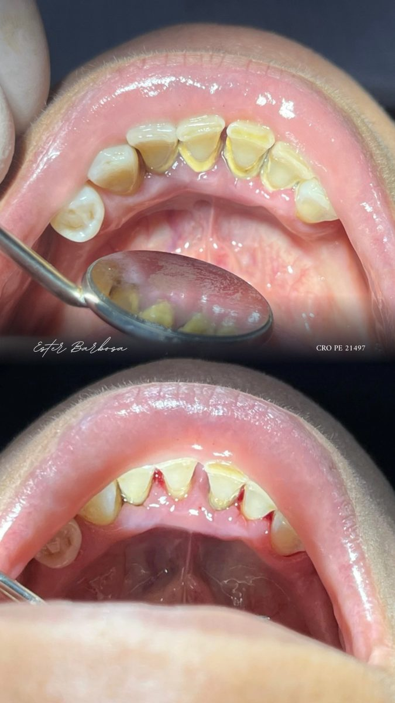
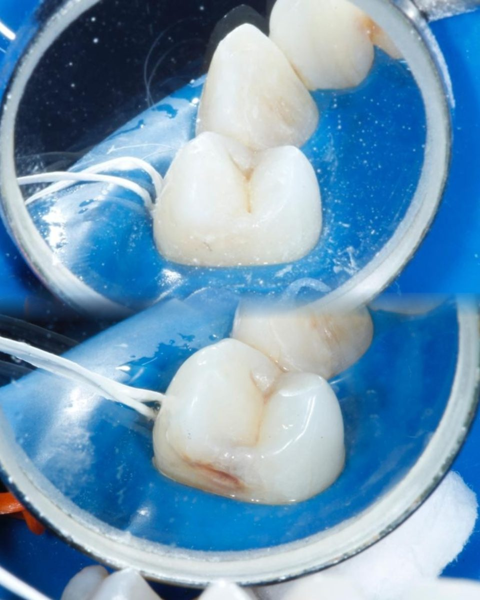
Imagens autorizadas pelos pacientes. Resultados individuais variam conforme a condição inicial, a adesão ao tratamento e os cuidados de manutenção — nenhum resultado é garantido de forma idêntica para todos os casos.
Reconhecimento
Depoimento
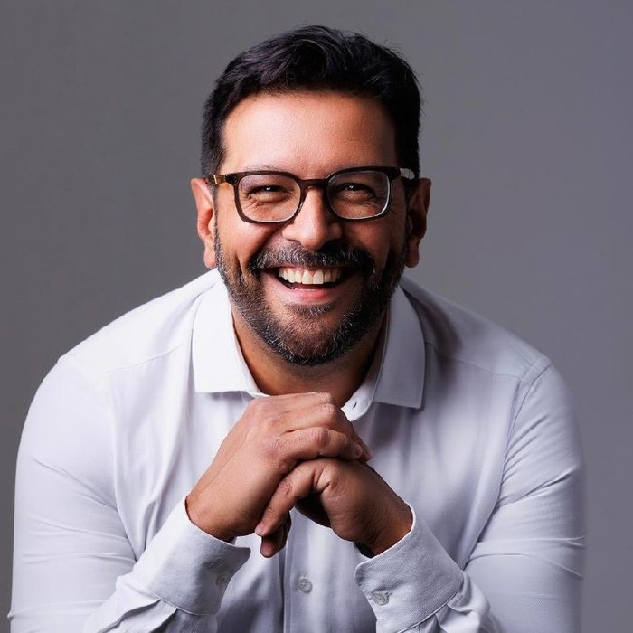
“Toda grande história de dedicação na nossa profissão começa com uma boa inspiração. Para a Ester, a paixão pela odontologia nasceu da admiração profunda pelo primo, Vinícius Holanda — um grande profissional de Recife que se tornou sua primeira referência de excelência.
Mas transformar o sonho em realidade exigiu dela uma força que ela sequer sabia que possuía. Aos 22 anos, em plena formação, enfrentou o momento mais doloroso da sua vida: a partida do pai. Perder alguém que era seu grande amigo e porto seguro a obrigou a amadurecer antes da hora — e aquela dor moldou a mulher e a cirurgiã-dentista que ela é hoje, com uma sensibilidade única nos atendimentos.
Quando a Ester atende, o foco dela vai muito além do planejamento clínico. A maior paixão dela é acolher: ver o paciente livre de dor, satisfeito e verdadeiramente feliz ao se olhar no espelho.
Em um mundo digital que muitas vezes nos afasta, a Ester escolhe o caminho da escuta, dedicando tempo para entender cada expectativa e entregar o seu melhor. Acompanhar sua evolução tem sido uma experiência incrível: ver como ela canaliza a própria história e os seus valores para construir uma odontologia humana, sem nunca abrir mão da maturidade e da seriedade na condução do consultório.
Que orgulho ver a sua dedicação, Ester. O seu legado já está sendo construído.”
Depoimentos
Atendimento excelente! Me senti super confortável durante todo o atendimento, Drª Ester muito atenciosa e deixou meus dentes bonitos.
Desde o primeiro momento, fui tratada com muita atenção, cuidado e profissionalismo. A Dra. explicou cada etapa do atendimento com clareza e teve muita paciência para esclarecer minhas dúvidas.
Excelente profissional! Muito didática, explica cada etapa do procedimento que será realizado. Acredito que quem tenha algum medo de dentista com certeza se sentirá seguro.
Desde o atendimento até o final do tratamento fui muito bem acompanhado. Houve preocupação, muita atenção e empatia. Antes eu sentia muita dor nos dentes, depois do tratamento estou bem melhor — já sou fiel!
Desde o primeiro contato, fui muito bem recebida e me senti super tranquila durante todo o procedimento. Ela foi extremamente cuidadosa e atenciosa! Excelente profissional, super recomendo.
Doutora Ester é uma excelente profissional! Seu atendimento, seu respeito pelos pacientes e sua dedicação me fizeram sentir muito confiante. O resultado foi maravilhoso!
Profissional extremamente competente e paciente. Atendimento excelente, muito atenciosa e cuidadosa. Recomendo de olhos fechados!
Uma excelente profissional, bastante detalhista! Virei cliente fiel.
Excelente profissional! Fui muito bem atendido desde o início, sempre muito atenciosa e cuidadosa. Explicou tudo com clareza e passou muita confiança durante o atendimento.
A melhor dentista que Recife já viu! Ótimo atendimento e uma profissional fora de série. Recomendo para todos!
Um ótimo atendimento. Explica tudo que vai fazer, muito atenciosa e profissional. Super indico.
Atendimento humanizado, profissional competente e simpática. Super indico.
Super recomendo. Atendimento excelente, educada, atenciosa, explica o tratamento passo a passo. Me passou confiança e tranquilidade durante todo o atendimento.
Profissional competente, preço justo, pontual, humana.
Excelente profissional, excelente atendimento. O espaço também é ótimo. Podem ir seguros cuidar da saúde dos seus dentinhos!
Profissional super educada e paciente, tirou todas as minhas dúvidas. Vou voltar sempre!
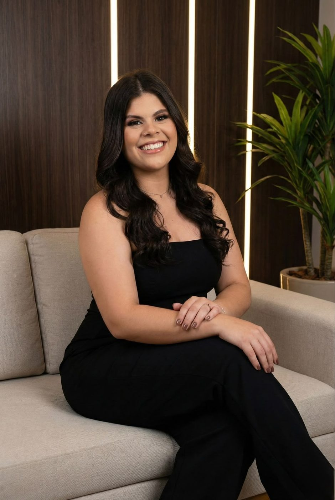
Medo de dentista?
Muita gente chega com experiências ruins nas costas: tratamentos difíceis, dor mal controlada, profissionais apressados. Todo o meu atendimento é desenhado para desfazer isso.
Formação e qualificação
Universidade de Pernambuco. Foi na convivência com odontologia, medicina e educação física que a escolha pela odonto se firmou.
Universidade Tiradentes (Unit). Formação concluída no fim de 2025, com atuação clínica iniciada imediatamente após a emissão do CRO.
Formação pelo grupo MFT, voltada a exodontias, sisos e pequenos procedimentos cirúrgicos com segurança e previsibilidade.
Participação nos principais congressos de odontologia do país, acompanhando materiais, técnicas e protocolos atualizados.
Desenvolvimento clínico e de gestão sob orientação do Dr. Flávio Venícius, construindo um consultório com base sólida em valor e integridade.
Atendimento clínico em Recife e região, com atuação integrada em alinhadores, clareamento, cirurgia, endodontia, periodontia e restaurações.
Dúvidas frequentes
O caminho mais rápido é o WhatsApp (81) 98491-8489. Você conta o que está sentindo, eu entendo a urgência do caso e encontramos um horário. Se for uma dor aguda, tento sempre abrir um encaixe no mesmo dia.
A primeira consulta é só conversa e avaliação — nada é feito sem você saber. Combinamos um sinal para você me pedir pausa a qualquer momento, uso anestésico tópico antes da agulha e explico cada passo enquanto acontece. Boa parte dos meus pacientes chegou exatamente assim.
Depende do protocolo. No clareamento de consultório já é possível ver diferença logo na primeira sessão; o caseiro leva de duas a três semanas. A sensibilidade é controlada com dessensibilizante antes e depois, e ajustamos a concentração do gel ao seu caso — ela é temporária quando aparece.
Servem para a maioria dos casos de apinhamento, diastemas e correções leves a moderadas. O planejamento é digital e feito em conjunto com o Dr. Flávio Venícius, então na avaliação já conseguimos dizer com honestidade se o alinhador é a melhor escolha para você ou se o aparelho fixo entrega um resultado melhor.
Na maioria das vezes, sim. A periodontia é a base da odontologia: gengiva inflamada compromete a cor final do clareamento, a adaptação da resina e a movimentação ortodôntica. É por isso que o plano sempre começa por saúde, depois função e só então estética.
Pix, dinheiro, débito e crédito com opção de parcelamento. O orçamento é fechado e entregue por escrito depois da avaliação, em etapas — você aprova cada uma antes de começar, sem cobrança surpresa no meio do tratamento.
O atendimento é particular. Emito recibo e a nota com os códigos dos procedimentos para quem quiser solicitar reembolso junto ao plano odontológico — é só me avisar no agendamento que já deixo a documentação preparada.
A recomendação geral é uma consulta de manutenção a cada seis meses, com profilaxia e revisão das restaurações. Pacientes com histórico de gengivite, bruxismo ou tratamento ortodôntico em andamento costumam ter retornos mais curtos — combinamos isso no seu plano.
Onde me encontrar
@esterabarbosa — bastidores, dicas e casos clínicos
| Segunda-feira | Fechado |
| Terça-feira | Fechado |
| Quarta-feira | 09:00 – 18:00 |
| Quinta-feira | 09:00 – 18:00 |
| Sexta-feira | 09:00 – 18:00 |
| Sábado | 09:00 – 18:00 |
| Domingo | 09:00 – 18:00 |
Encaixes, urgências e horários especiais podem ser combinados pelo WhatsApp.
Me conte o que você está sentindo e o que gostaria de mudar. A primeira conversa não custa nada — e já vai te dar clareza sobre o próximo passo.